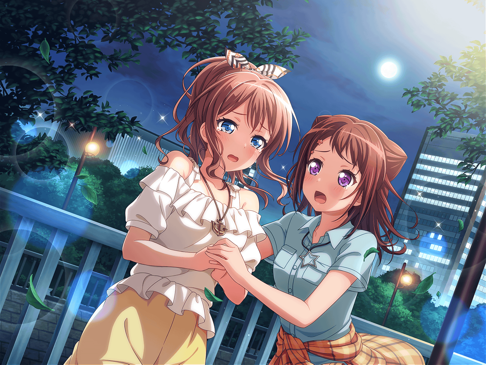

帰り道
香澄
はぁ～。
なんか、ダメだよね、私って……
沙綾
香澄？
香澄
さっきおたえに
『キラキラドキドキしてるの？』って聞かれて、
私、なんにも答えられなかった
香澄
それに、おたえの言った通り、
私、今日、全然キラキラドキドキしてなかった
香澄
ついこの前までは、みんなでいれば当たり前みたいに
キラキラドキドキしてたんだけど……今はどうしたら
キラキラドキドキするのか、全然わかんなくなっちゃった……
沙綾
うん……
そうかも……ね
香澄
さーやの、言った通りだったね？
沙綾
ん？ 何が？
香澄
さーやの言った通り、
有咲のこと、そっとしておいてあげればよかった……
香澄
私が無理やり練習に連れ出したから……
有咲のこと――
香澄
（余計に傷つけちゃったよね……）
香澄
さーや、どうしよう……
有咲もりみりんも、おたえまでいなくなっちゃって……
このままじゃ、ポピパが……どんどんバラバラに……
香澄
うう……っ。
ううう……っ
沙綾
ちょっと香澄っ！
香澄がそんな弱気でどうするの！？
香澄
だって、私……私……
沙綾
大丈夫！ 私達なら乗り越えられる！
今までだっていろんなことを乗り越えてきたんだもん！
私達なら平気だよ……っ！
香澄
さーや……
沙綾
て……なんか、すっごい薄っぺらい言葉だね……
自分で言ってて、途中で嫌になっちゃった……
沙綾
ごめんね、香澄。
実は私も、どうしたらいいかわからないの
香澄
え？
沙綾
私はさ、前にいたバンド『CHiSPA』が
バラバラになっていくところ、１番近くで見てたから……
沙綾
というか……
もしかしたら私がバラバラにしちゃったのかな？
沙綾
それまでいつも一緒にいた友達から、
急に逃げるようになっちゃった……
沙綾
学校の廊下の向こうの方にバンドの友達がいるとするでしょ？
そしたらさ……
なんか隠れちゃったりするんだよ……
沙綾
それまで毎日一緒にいたのにだよ？
信じられる？

沙綾
バンドがバラバラになっちゃう、って……
昨日まで一緒だった友達と、それまで通り
仲良くできなくなっちゃうってことなんだよ……
香澄
うう……っ。
さーや……
沙綾
だから、私……すっごい怖いの……
せっかく居場所を見つけたのに、また……
失くなっちゃうんじゃないかって……思っちゃって……
香澄
私、そんなのやだ……
そんなの絶対にやだよ……っ！
沙綾
私さ、香澄のこと本当にすごいなーって思ってるんだ
香澄
私なんて、全然すごくないよ……
だって私が余計なことしちゃったから
こんなことになっちゃったんだよ？
沙綾
私は、CHiSPAがバラバラになっちゃった時、
何もできなかったよ？ 余計なことすらできなかった
沙綾
香澄はさ、いつでもすぐに行動してるもん。
私はどうしても立ち止まって考えちゃうけど、
香澄はそうじゃない。いつでも行動してる
沙綾
それってきっと、香澄にしかできない、
すごいことなんじゃないかなって、
さっき香澄が有咲と話してる時に思ったんだ
香澄
けど……
それでも全然ダメだった……
もう私……全然わかんないよ！
沙綾
ねぇ、香澄……
手、つないでみようか？
香澄
……手？
沙綾
前にさ、花火大会に行った時、
みんなで手をつないでみたでしょ？
その手から気持ちが伝わったよね？
香澄
うん……
沙綾
私の気持ち、どうしても香澄に伝えたいんだ。
言葉じゃなくて、気持ちが……
沙綾
だから……はい。
手、つなご？
香澄
うん！
沙綾
私の気持ち、伝われ……っ！
香澄
……さーや
沙綾
えい！
沙綾
えい！
えいっ！
……えいっ！！
沙綾
どうだった？
私の気持ち、伝わったかな？
香澄
うん。
たぶん、私とまったく同じ気持ちだった
香澄・沙綾
ポピパが、大好き！
香澄
……さーや、ありがとう。
私、頑張る。
絶対、頑張る！
沙綾
ううん。
頑張る、じゃないよ。
一緒に頑張ろう！
香澄
うん！
香澄
あのさ、さーや……
ひとつだけ言っていい？
沙綾
ん？ なに？
香澄
手、ちょっと強く握りすぎ……
すっごい、痛かった……
沙綾
あ！ ごめんっ！
ちょっと気持ちを込めすぎちゃった……っ
香澄・沙綾
はは……
あははははは